Let's start?
Thank you for purchasing my theme. If you have any questions that are beyond the scope of this help file, please feel free to email via my user page contact form here. Thank You so much!
After purchasing you'll find these files in archive:
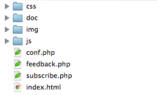You need to upload these files on your server (without folder "doc").
You've installed the theme.
Warning! It's not WordPress theme and you need to install the theme separately from WordPress.
The theme has many settings. You can change them in "/js/config.js"
Some important settings:
1. Setup the countdown
Find the "end_date" and change the value of it by rules below
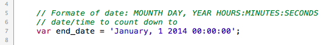Note! Don't forget to change the timezone to yours otherwise in other parts of the world the countdown will end before (or later) than you need.
2. How to set the page which opens when countdown ends.
You just need to change "expiry_goto" on the address of page which must be opens, when countdown ends. Or set "expiry_goto" equal "null" if you don't want open any page.
3. Add a new photo to the slider
- Upload to the "/img/slider/" any photo.
- In the "/js/config.js" add the name of photo to the "photos".
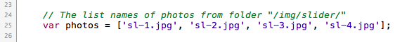- That's all.
4. Setup the Twitter
Just change the "username" on yours.
But if you want to disable the Twitter-widget, change the "enb" to "false"
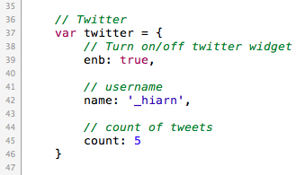
STEP #1. Setup a Twitter Application
1. Visit https://dev.twitter.com/apps/ and sign in using your Twitter username and password.
2. Select "Create new application" and enter the application details.
3. On the next details screen, click "create my access token".
4. Make a note of the Consumer key, Consumer secret, Access token and Access token secret as highlighted below.
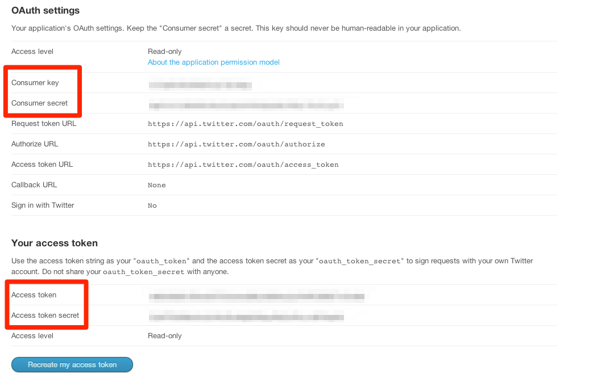
STEP #2. Authenticate the Twitter Feed.
1. Download the attachment and upload it into folder with theme.
2. Fill out all fields in the "twitter/index.php" as highlighted below.
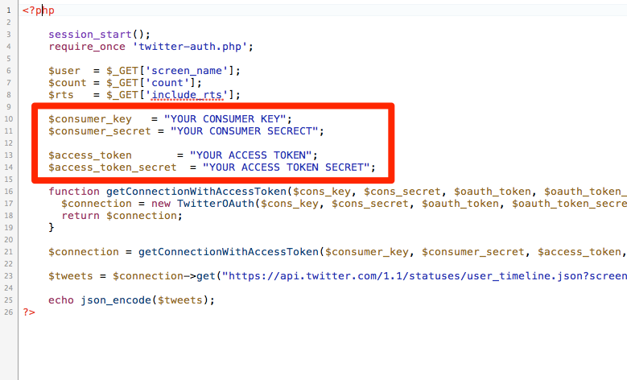
STEP #3. Enjoy :)
1. Open the "conf.php".
2. You will see this:
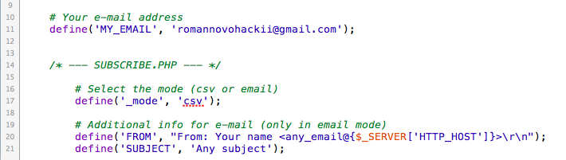3. Change email and values to the desired.
4. Done.
What do you need to change in the "index.html" before start?
1. Header
You need to change the "href" of tag "a" on address of current page and upload your logo to the "/img/".
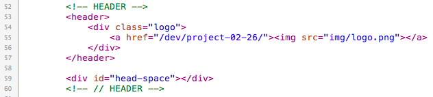
2. About
Write your short description to the "div" with class "text"
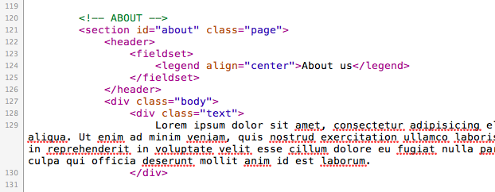
3. Our team
Upload photos of your team to the "/img/about" with names 1.jpg, 2.jpg or 3.jpg
To disable photo you can set class "nopic" (such on screenshot - third block with class "item")
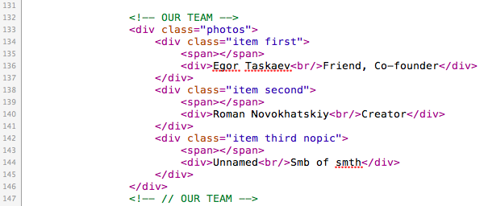
3. Social
Change "#" on your social-links
If you would like to change the social icon, you should replace value of "class" on the name of icon from the folder "/ img / icons".
For example: <li class="twitter"></li> --> <li class="tumblr"></li>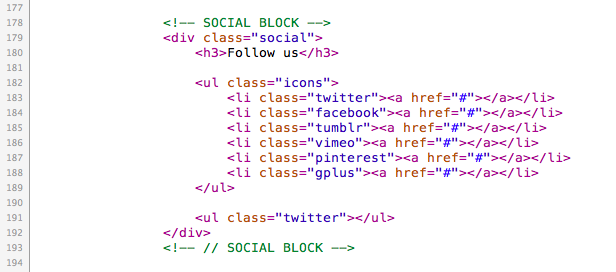
"Devices.css" is responsible for the correct display of theme on different devices (iPhone, iPad etc.).
"Icons.css" is responsible for display social icons.
"Main.css" is responsible for main css structure.
"Reset.css" is responsible for reset styles in different browsers.
"Style.css" launches previous styles.
"ie-fix" contains styles for Internet Explorer.
"config.js" contains settings of theme.
"countdown.js" controls the countdown (You don't need to change this file).
"func.js" contains several functions.
"main.js" contains the main functions of theme.
"parallax.js" controls the parallax.
"sys" contains files which you do not need to edit.
I've used the following files.
Once again, thank you so much for purchasing this theme. As I said at the beginning, I'd be glad to help you if you have any questions relating to this theme. No guarantees, but I'll do my best to assist. If you have a more general question relating to the themes on ThemeForest, you might consider visiting the forums and asking your question in the "Item Discussion" section.
Roman Novokhatskiy